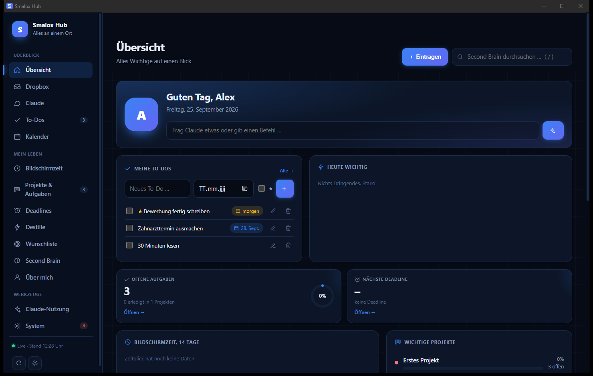

Dashboard
Alles auf einen Blick
Übersicht, To-Dos, Kalender, Projekte, Wunschliste und dein Second Brain. Live aktualisiert, mit Diagrammen statt Tabellen.
Neu: Version 1.0 · kostenlos für Windows
To-Dos, Deadlines mit echter Konsequenz, Bildschirmzeit, dein Second Brain und ein KI-Assistent, der für dich einsortiert. Alles lokal auf deinem PC, ohne Konto, ohne Cloud.
SmaloxHub.exe · ca. 16 MB · Windows 10 & 11

Interaktive Demo
Eine Mini-Version des Hubs direkt im Browser. Hake To-Dos ab, schreib etwas in die Dropbox und schau zu, wie es einsortiert wird.
Verpasst du die Deadline, werden Spiele und TikTok gesperrt, bis du die Aufgabe mit Nachweis erledigst.
Tipp: Fahr mit der Maus über einen Tag.
Haken = gekauft. Die Summe rechnet mit.
Empfehlungen
To-Dos
Funktionen
Was du irgendwo einträgst, taucht überall auf, wo es hingehört: im Kalender, im Projekt, in den Deadlines.
Übersicht, To-Dos, Kalender, Projekte, Wunschliste und dein Second Brain. Live aktualisiert, mit Diagrammen statt Tabellen.
Verpasst? Dann sind Spiele und Ablenkungs-Seiten gesperrt, bis die Aufgabe erledigt ist.
Zeichnet automatisch auf, welche Apps und Seiten du nutzt. Fokus gegen Ablenkung, pro Tag und Woche.
TikToks, Reels, YouTube oder Artikel rein, Kernpunkte, To-Dos und Buch-, Film- und Spieltipps raus.
Chrome-Erweiterung: 15 Minuten TikTok pro Stunde, danach ist bis zur vollen Stunde Schluss.
Trag „Studentenausweis abholen“ ins Projekt Studienstart um.
Erledigt: Aufgabe im Projekt „Studienstart“ angelegt und aus dem Brain Dump entfernt.
Wie viel Zeit hatte ich diese Woche mit Gaming?
6 Std 20 Min, 40 Minuten weniger als letzte Woche. 📉
Die Dropbox
Schreib rein, was dir einfällt, auch fünf Dinge auf einmal. Claude erkennt, was es ist, und legt es an den richtigen Platz.
„Morgen 15 Uhr Zahnarzt“→ To-Do im Kalender„Für Zeitblick noch das Impressum prüfen“→ Aufgabe im Projekt„Irgendwann kaufen: Wool Coat, 60 €“→ Wunschliste„Nach Sport schlafe ich besser“→ Notiz im Second BrainEin Tag mit Smalox Hub
PC an, der Hub startet automatisch. Oben deine To-Dos, daneben „Heute wichtig“: eine Deadline in 7 Tagen, zwei Termine.
Taste E, „Idee: Wochenbericht per Mail“ tippen, Enter. Landet als Aufgabe im richtigen Projekt.
Link in Destille werfen. Eine Minute später: drei konkrete To-Dos und zwei Buchtipps.
Zeitblick zeigt: 4 Std Fokus, 1 Std Ablenkung. Deadswitch-Schritt 2 abgehakt, die Sperre bleibt aus.
Warum Smalox Hub
| Smalox Hub | Typische To-Do-App | Typischer Zeit-Tracker | |
|---|---|---|---|
| Kosten | 0 € | oft Abo | oft Abo |
| Daten bleiben auf deinem PC | ✓ | meist Cloud | meist Cloud |
| Deadlines mit Konsequenz | ✓ | – | – |
| Bildschirmzeit automatisch | ✓ | – | ✓ |
| Videos zu To-Dos | ✓ | – | – |
| Obsidian / Second Brain | ✓ | selten | – |
| KI sortiert für dich ein | ✓ | teils | – |
Installieren
SmaloxHub.exe doppelklicken.🧩 Optional: Chrome-Erweiterungen
chrome://extensions → „Entwicklermodus“ → „Entpackte Erweiterung laden“, dann den Ordner wählen:
%LOCALAPPDATA%\SmaloxHub\apps\web-demos\zeitschloss%LOCALAPPDATA%\SmaloxHub\apps\web-demos\destille\extension✦ Optional: KI mit Claude
Chat, Dropbox und Destille nutzen Claude Code. Einmal installieren und mit deinem Claude-Konto anmelden, der Hub findet es von selbst. Ohne Claude läuft alles andere trotzdem.
🔒 Deine Daten bleiben bei dir
FAQ
Nichts. Für die KI-Funktionen brauchst du ein eigenes Claude-Konto, alles andere läuft ohne.
Nein, aktuell nur unter Windows 10 und 11.
Die Datei ist nicht mit einem teuren Code-Zertifikat signiert, deshalb kennt Windows sie noch nicht. „Weitere Informationen“ → „Trotzdem ausführen“.
Ja, beim ersten Start wählst du den Ordner. Projekte in 02 Projekte/Wichtig, Mittel wichtig, Unwichtig, Aufgaben als - [ ], Daily Notes in 05 Daily Notes. Ohne Vault bekommst du eine passende Vorlage.
Ja, das ist der Sinn. Verpasst du eine Deadline, beendet Deadswitch Spiele und sperrt (mit Zeitschloss) Ablenkungs-Seiten, bis du die Aufgabe mit Nachweis erledigst. Lege Deadlines bewusst an.
Die .exe liest Titel, Beschreibung und Seite. Die volle Video-Auswertung (Ton abschreiben, Standbilder) braucht große Zusatzpakete und ist deshalb nicht enthalten.
Windows-Einstellungen → Apps → „Smalox Hub“ → Deinstallieren. Du wählst, ob deine Daten bleiben. Dein Second-Brain-Ordner wird nie gelöscht.
Kostenlos, lokal, in zwei Minuten installiert.
Smalox Hub herunterladen